Section 6.4 Stochastic AUC and NDCG Maximization
In many domains such as radiology and drug discovery, areas under the curves are commonly used to assess the performance of a predictive model. In domains that involve ranking or recommendation, normalized discounted cumulative gain (NDCG) is commonly used as a performance metric. We present applications of SCO and FCCO algorithms for optimizing these metrics directly.
6.4.1 Stochastic AUC Maximization
In this section, we focus on optimizing the area under ROC curve (AUC) for binary classification as depicted in Figure 2.3.
Method 1: Pairwise Loss Minimization
The training data consists of \(\{\mathbf{x}_i, y_i\}_{i=1}^n\), where \(\mathbf{x}\in\mathbb{R}^d\) is the input and \(y\in\{1,-1\}\) is the binary label. The traditional surrogate objective for AUC maximization is the pairwise loss. To optimize the pairwise surrogate objective, we just need to sample positive and negative data and then define a mini-batch pairwise loss:
\[\frac{1}{|\mathcal{B}_+|}\sum_{\mathbf{x}_i\in\mathcal{B}_+}\frac{1}{|\mathcal{B}_-|}\sum_{\mathbf{x}_j\in\mathcal{B}_-}\ell(h(\mathbf{w}; \mathbf{x}_j) - h(\mathbf{w}; \mathbf{x}_i)).\]
Calling backpropagation on this mini-batch pairwise loss gives an unbiased stochastic gradient estimator. Then any appropriate optimizer can be leveraged to update the model. This is the same as the conventional algorithm except that the data sampler needs to sample both positive and negative data (see Section 6.4.5).
A limitation of this approach is that it increases the communication costs of distributed training when data are distributed across different machines as it requires to form positive-negative pairs across different machines.
Method 2: Minimax Optimization
The second approach is to solve the formulation. To illustrate the algorithm, we give its formulation below:
\[\begin{equation}\label{eqn:aucminmaxframework} \begin{aligned} \min_{\mathbf{w}\in\mathbb{R}^d, (a,b)\in\mathbb{R}^2}\quad & \frac{1}{|\mathcal{S}_+|}\sum_{\mathbf{x}_i\in\mathcal{S}_+}(h(\mathbf{w}; \mathbf{x}_i)-a)^2 + \frac{1}{|\mathcal{S}_-|}\sum_{\mathbf{x}_j\in\mathcal{S}_-}(h(\mathbf{w}; \mathbf{x}_j)-b)^2 \\ & + f\left(\frac{1}{|\mathcal{S}_-|}\sum_{\mathbf{x}_j\in\mathcal{S}_-}h(\mathbf{w}; \mathbf{x}_j) - \frac{1}{|\mathcal{S}_+|}\sum_{\mathbf{x}_i\in\mathcal{S}_+}h(\mathbf{w}; \mathbf{x}_i)\right), \end{aligned} \end{equation}\]
where \(h(\mathbf{w}; \cdot)\in\mathbb{R}\) is the prediction output of the model for any input, \(\mathcal{S}_+\) is the set of positive data and \(\mathcal{S}_-\) is the set of negative data and \(f\) is a non-decreasing surrogate function.
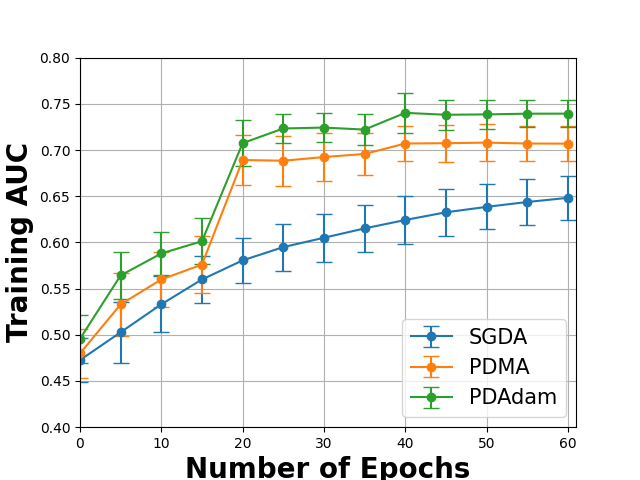
Let us illustrate the algorithm for a squared-hinge surrogate function \(f(s) = \max(m+s, 0)^2\), where \(m>0\) is a margin parameter. Since \(f\) is non-linear, the last term of the above objective function is a compositional function of the form \(f(g)\), where \(g(\mathbf{w}) = \frac{1}{|\mathcal{S}_-|}\sum_{\mathbf{x}_j\in\mathcal{S}_-}h(\mathbf{w}; \mathbf{x}_j) - \frac{1}{|\mathcal{S}_+|}\sum_{\mathbf{x}_i\in\mathcal{S}_+}h(\mathbf{w}; \mathbf{x}_i)\). We consider the minimax reformulation using the conjugate of \(f(\cdot)\) (see Example 1.12), where we convert the above minimization problem into a minimax optimization problem:
\[\begin{equation}\label{eqn:aucminimax} \begin{aligned} \min_{\mathbf{w}, a, b}\max_{\alpha\geq 0}\quad & F(\mathbf{w}, a, b; \alpha):=\frac{1}{|\mathcal{S}_+|}\sum_{\mathbf{x}_i\in\mathcal{S}_+}(h(\mathbf{w}; \mathbf{x}_i)-a)^2 + \frac{1}{|\mathcal{S}_-|}\sum_{\mathbf{x}_j\in\mathcal{S}_-}(h(\mathbf{w}; \mathbf{x}_j)-b)^2 \\ & + \alpha \left(m+\frac{1}{|\mathcal{S}_-|}\sum_{\mathbf{x}_j\in\mathcal{S}_-}h(\mathbf{w}; \mathbf{x}_j) - \frac{1}{|\mathcal{S}_+|}\sum_{\mathbf{x}_i\in\mathcal{S}_+}h(\mathbf{w}; \mathbf{x}_i)\right) - \frac{\alpha^2}{4}. \end{aligned} \end{equation}\]
Compared to pairwise loss minimization, the advantage of the above minimax formulation is that its objective is decomposable over individual data points, making it well-suited for distributed training.
We present a practical framework in Algorithm 27 built from SMDA for solving the above problem, where the primal-dual Momentum method (PDMA) employs the momentum update for the primal variable \(\bar{\mathbf{w}}\) or a primal-dual Adam method (PDAdam) employs the Adam update for the primal variable. The effectiveness of PDMA/PDAdam over SGDA for solving (\(\ref{eqn:aucminimax}\)) on a real-world dataset is shown in Figure 6.8.
Algorithm 27: PDMA or PDAdam for solving (\(\ref{eqn:aucminimax}\))
- Require: learning rate schedules, starting points \(\bar{\mathbf{w}}_1=(\mathbf{w}_1, a_1, b_1)\), \(\alpha_{1}\)
- for \(t=1,\dotsc, T\) do
- Draw \(B_1\) positive data \(\mathcal{B}^+_t\subset\mathcal{S}_+\) and \(B_2\) negative data \(\mathcal{B}^-_t\subset\mathcal{S}_-\)
- Update \(\alpha_{t+1} = \bigg[(1-\tau_t/2)\alpha_t + \tau_t\left(m+\frac{1}{B_2}\sum_{\mathbf{x}_j\in\mathcal{B}^-_t}h(\mathbf{w}; \mathbf{x}_j) - \frac{1}{B_1}\sum_{\mathbf{x}_i\in\mathcal{B}^+_t} h(\mathbf{w}_t; \mathbf{x}_i)\right)\bigg]_+\)
- Compute the vanilla gradient estimator
\[\mathbf{z}_t = \frac{1}{B_1}\sum_{i \in \mathcal{B}^+_{t}}\nabla_{\bar{\mathbf{w}}}(h_{\mathbf{w}_t}(\mathbf{x}_i)-a_t)^2 + \frac{1}{B_2}\sum_{\mathbf{x}_j\in\mathcal{B}^-_t}\nabla_{\bar{\mathbf{w}}}(h(\mathbf{w}_t; \mathbf{x}_j)-b_t)^2 + \alpha_t \nabla_{\bar{\mathbf{w}}}\left(\frac{1}{B_2}\sum_{\mathbf{x}_j\in\mathcal{B}^-_t}h(\mathbf{w}; \mathbf{x}_j) - \frac{1}{B_1}\sum_{\mathbf{x}_i\in\mathcal{B}^+_t} h(\mathbf{w}_t; \mathbf{x}_i)\right)\]
- Update \(\bar{\mathbf{w}}_{t+1}\) by Momentum or AdamW
- end for
Squared-hinge surrogate vs Square surrogate function
The optimization framework (\(\ref{eqn:aucminmaxframework}\)) and PDMA/PDAdam algorithms with a small modification on the dual variable update can handle any smooth surrogate function \(f\). When \(f(s)=(m+s)^2\) is a square surrogate, the minimax formulation is equivalent to the pairwise loss minimization with a square surrogate loss (AUC square loss). Nevertheless, the minimax AUC margin loss with the squared-hinge surrogate is more robust than the AUC square loss. Figure 6.9 illustrates the robustness of the minimax AUC margin loss.
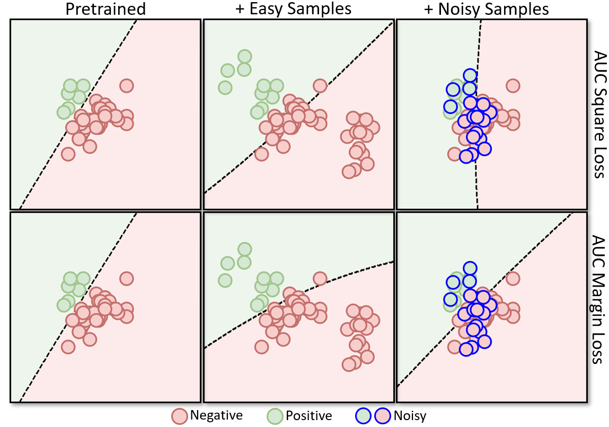
💡 Feature Learning
Feature learning is an important capability of deep learning. However, like the DRO objective, the end-to-end training based on the AUC surrogate objective does not favor feature learning as compared with traditional ERM. The reason is that AUC surrogate objective gives unequal weights to different data points due to the imbalance of training data. To address this challenge, one way is to employ a two-stage approach, where the first stage pretrains the encoder network on the training data by traditional supervised learning (e.g., ERM with the CE loss) or self-supervised representation learning and the second stage fine-tunes the feature extraction layers and a random initialized classifier layer by optimizing an AUC surrogate objective.
An approach for performing effective feature learning and AUC maximization in a unified framework is to optimize a compositional objective (Yuan et al., 2022a):
\[\begin{align*} \min_{\mathbf{w}, a, b}\max_{\alpha\geq 0} F(\mathbf{w} - \tau\nabla L_{\text{CE}}(\mathbf{w}), a, b; \alpha), \end{align*}\]
where \(L_{\text{CE}}(\mathbf{w})\) is the empirical risk based on the CE loss and \(\tau>0\) is a hyper-parameter.
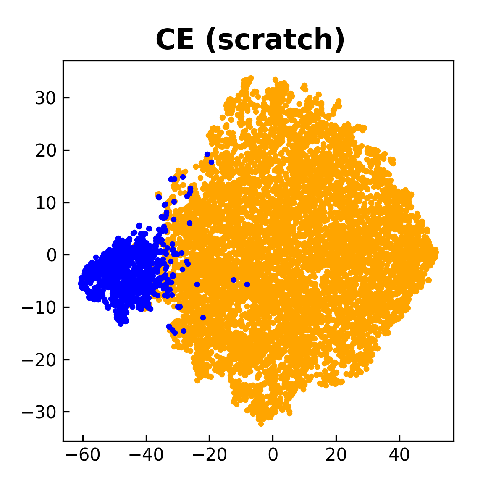
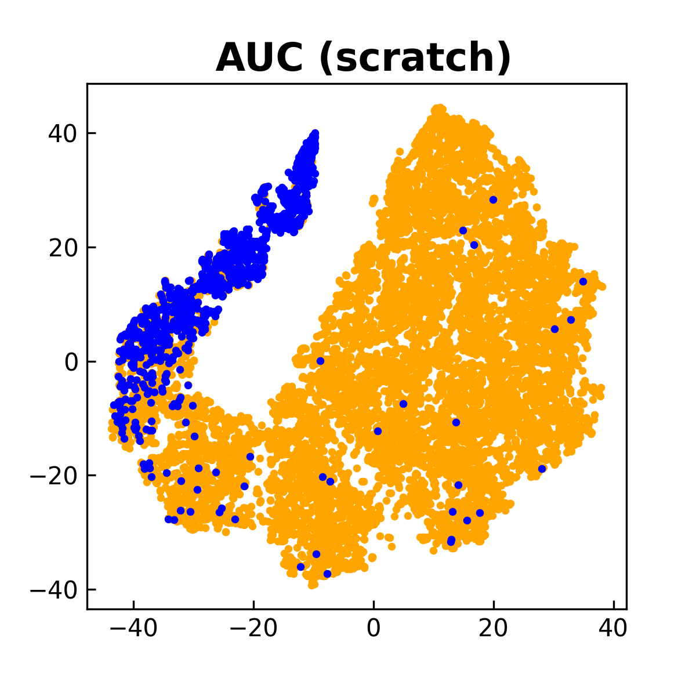
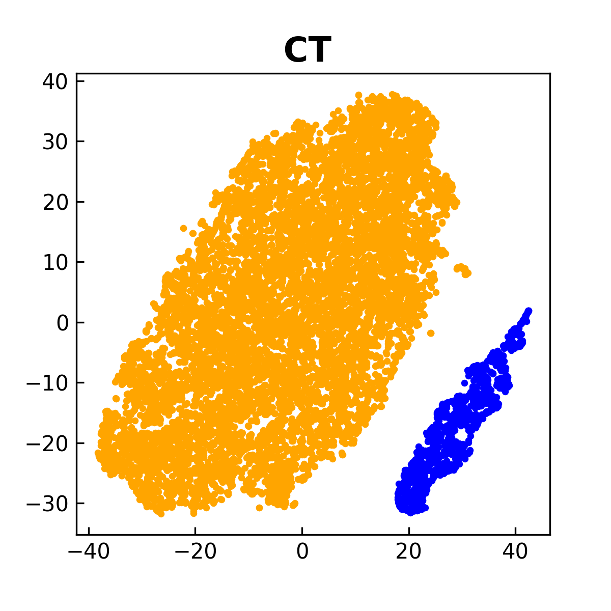
To understand this compositional objective intuitively, let us take a thought experiment by using a gradient descent method to optimize the compositional objective. To this end, we denote the objective by \(L_{\text{AUC}}(\mathbf{w} - \tau\nabla L_{\text{CE}}(\mathbf{w}))\), where \(L_{\text{AUC}}\) denotes the AUC surrogate objective. First, we evaluate the inner function by \(\mathbf{u}=\mathbf{w} - \alpha\nabla L_{\text{CE}}(\mathbf{w})\). We can see that \(\mathbf{u}\) is computed by a gradient descent step for minimizing the empirical risk \(L_{\text{CE}}(\mathbf{w})\), which facilitates the learning of lower layers for feature extraction due to equal weights of all examples. Then, we take a gradient descent step to update \(\mathbf{w}\) for minimizing the outer function \(L_{\text{AUC}}(\cdot)\) by using the gradient \(\nabla L_{\text{AUC}}(\mathbf{u})\) instead of \(\nabla L_{\text{AUC}}(\mathbf{w})\). Because \(\mathbf{u}\) is better than \(\mathbf{w}\) in terms of feature extraction layers, taking a gradient descent step using \(\nabla L_{\text{AUC}}(\mathbf{u})\) would be better than using \(\nabla L_{\text{AUC}}(\mathbf{w})\). In addition, taking a gradient descent step for the outer function \(L_{\text{AUC}}(\cdot)\) will make the classifier more robust to the minority class due to use of the AUC surrogate loss. Overall, we have two alternating conceptual steps, i.e., the inner gradient descent step \(\mathbf{u} = \mathbf{w} - \tau\nabla L_{\text{CE}}(\mathbf{w})\) acts as a feature purification step, and the outer gradient descent step \(\mathbf{w} - \eta(I - \tau\nabla^2 L_{\text{CE}}(\mathbf{w}))\nabla L_{\text{AUC}}(\mathbf{u})\) acts as a classifier robustification step, where \(\eta\) is a step size.
For practical implementation, the intermediate model \(\mathbf{w} - \tau\nabla L_{\text{CE}}(\mathbf{w})\) can be tracked by the MA estimator \(\mathbf{u}_{t} = (1-\gamma)\mathbf{u}_{t-1}+ \gamma (\mathbf{w}_t - \tau\nabla \hat{L}_{\text{CE}}(\mathbf{w}_t))\), where \(\hat{L}_{\text{CE}}\) is a mini-batch CE loss. Then, \(\mathbf{u}_{t}\) is used to update the primal variables \((\mathbf{w}; a; b)\) and the dual variable \(\alpha\). A comparison between this approach and those that optimize CE and AUC losses from scratch is shown in Figure 6.10.
Finally, we remark that the data sampler is different from the traditional one because it needs to sample both positive and negative examples. It also has great impact on the performance. We defer the discussion to Section 6.4.5.
6.4.2 Stochastic AP Maximization
Using a surrogate loss, AP maximization can be formulated as an FCCO problem, i.e.,
\[\begin{align}\label{eqn:apsurr2} \min_{\mathbf{w}} \frac{1}{n} \sum\limits_{\mathbf{x}_i\in\mathcal{S}_+} f(\mathbf{g}(\mathbf{w}; \mathbf{x}_i,\mathcal{S})), \end{align}\]
where \(\mathcal{S}_+\) denotes the set of \(n\) positive examples, \(\mathcal{S}\) is the set of all examples, and
\[\begin{align*} &f(\mathbf{g})=-\frac{[\mathbf{g}]_1}{[\mathbf{g}]_2},\\ &\mathbf{g}(\mathbf{w}; \mathbf{x}_i, \mathcal{S})=[g_1(\mathbf{w}; \mathbf{x}_i, \mathcal{S}), g_2(\mathbf{w}; \mathbf{x}_i, \mathcal{S})],\\ &g_1(\mathbf{w}; \mathbf{x}_i, \mathcal{S})=\frac{1}{|\mathcal{S}|}\sum\limits_{\mathbf{x}_j\in\mathcal{S}}\mathbb{I}(y_j=1)\ell(h(\mathbf{w}; \mathbf{x}_j) - h(\mathbf{w}; \mathbf{x}_i)),\\ &g_2(\mathbf{w}; \mathbf{x}_i, \mathcal{S})=\frac{1}{|\mathcal{S}|}\sum\limits_{\mathbf{x}_j\in\mathcal{S}} \ell(h(\mathbf{w}; \mathbf{x}_j)- h(\mathbf{w}; \mathbf{x}_i)), \end{align*}\]
where \(\ell(\cdot)\) is a non-decreasing surrogate pairwise loss (see examples in Table 2.3).
We present an application of SOX to solving the above problem in Algorithm 28, which is referred to as SOAP.
Algorithm 28: SOAP for AP maximization (\(\ref{eqn:apsurr2}\))
- Require: learning rate schedule, \(\gamma\in(0,1)\), starting point \(\mathbf w_1\)
- for \(t=1,\dotsc, T\) do
- Draw \(B_1\) positive data \(\mathcal{B}^+_t\subset\mathcal{S}_+\) and \(B_2\) negative data \(\mathcal{B}^-_t\subset\mathcal{S}_-\)
- for \(\mathbf{x}_i\in \mathcal{B}^+_t\) do
- Update the inner function value estimators
\[u^{(1)}_{i, t} = (1-\gamma_t) u^{(1)}_{i,t-1} + \gamma_t\frac{1}{B_1+B_2}\sum_{\mathbf{x}_j\in |\mathcal{B}^+_t\cup\mathcal{B}^-_t|} \mathbb{I}(y_j=1)\ell(h(\mathbf{w}_t; \mathbf{x}_j) - h(\mathbf{w}_t; \mathbf{x}_i))\]
\[u^{(2)}_{i, t} = (1-\gamma_t) u^{(2)}_{i,t-1} + \gamma_t\frac{1}{B_1+B_2}\sum_{\mathbf{x}_j\in |\mathcal{B}^+_t\cup\mathcal{B}^-_t|} \ell(h(\mathbf{w}_t; \mathbf{x}_j) - h(\mathbf{w}_t; \mathbf{x}_i))\]
- end for
- Set \(\mathbf{u}_{i,t} = \mathbf{u}_{i,t-1}, i\not\in\mathcal{B}^+_t\)
- Compute the vanilla gradient estimator
\[\mathbf{z}_t = \frac{1}{B_1}\sum_{\mathbf{x}_i\in\mathcal{B}^+_{t}}\frac{1}{B_1+B_2}\sum_{\mathbf{x}_j\in |\mathcal{B}^+_t\cup\mathcal{B}^-_t|} \frac{u^{(1)}_{i,t}-u^{(2)}_{i,t}\mathbb{I}(y_j=1)}{(u^{(2)}_{i,t})^2}\nabla\ell(h(\mathbf{w}_t; \mathbf{x}_j) - h(\mathbf{w}_t; \mathbf{x}_i))\]
- Update \(\mathbf{w}_{t+1}\) by Momentum or AdamW
- end for
💡 Initialization of \(\mathbf{u}\)
Unlike traditional algorithms, Algorithm 28 for AP maximization requires initializing an additional set of auxiliary variables \(\mathbf{u}_1, \ldots, \mathbf{u}_n\). In contrast to the model parameter \(\mathbf{w}\), which is randomly initialized, these auxiliary variables can be initialized upon their first update. Specifically, when index \(i\) is first sampled, we set \(\mathbf{u}_{i,t-1}\) to the corresponding mini-batch estimator of the inner function value. As a result, the initial update of \(\mathbf{u}_{i,t}\) coincides with the mini-batch estimate of the inner function at that point. This technique is motivated by theoretical analysis (cf. Theorem 5.1) and will be used in other FCCO applications.
💡 Feature Learning
Similar to AUC maximization, the end-to-end training based on the AP surrogate objective does not favor feature learning. To mitigate this issue, one can first pretrain the encoder network on the training data by traditional supervised learning (e.g. ERM with the CE loss) or self-supervised representation learning and then fine-tune the feature extraction layers and a random initialized classifier layer by optimizing an AP surrogate objective. The compositional training could be also employed for unified feature learning and AP maximization.
💡 Moving-average parameter \(\gamma_t\)
In practice, we can set \(\gamma_t=\gamma\) and tune \(\gamma\) in the range \((0,1)\) to optimize the validation performance.
Figure 6.11 illustrates the effectiveness of SOAP relative to an existing method for AP maximization implemented in the Google TensorFlow Constrained Optimization library.
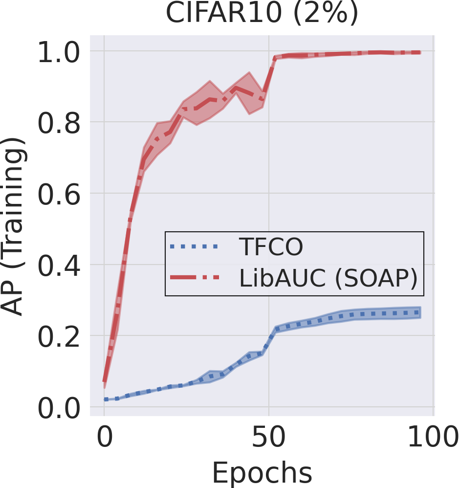
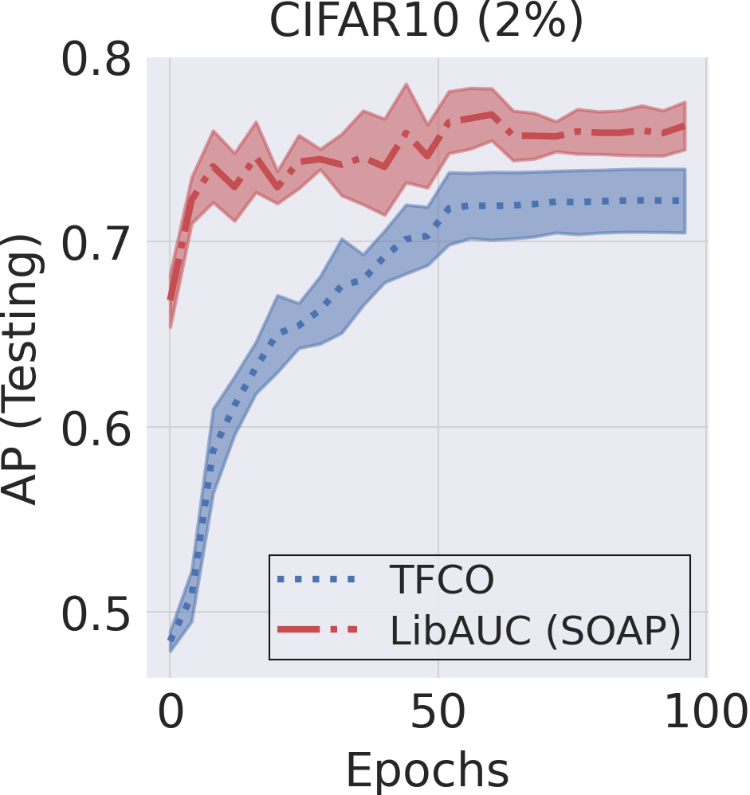
6.4.3 Stochastic Partial AUC Maximization
6.4.3.1 Stochastic OPAUC Maximization
We focus on maximizing the OPAUC with the false positive rate (FPR) restricted to the range \([0, \beta]\). As shown in Section 2.3.3, OPAUC maximization can be formulated as minimizing a surrogate objective:
\[\begin{align}\label{eqn:opauc-0-beta} \min_{\mathbf{w}} \frac{1}{n_+}\frac{1}{k}\sum_{\mathbf{x}_i\in\mathcal{S}_+}\sum_{\mathbf{x}_j\in\mathcal{S}^\downarrow_-[1, k]}\ell(h(\mathbf{w}; \mathbf{x}_j)-h(\mathbf{w}; \mathbf{x}_i)), \end{align}\]
where \(k = \lfloor n_-\beta \rfloor\), \(\mathcal{S}^{\downarrow}[1,k]\subseteq\mathcal{S}\) denotes the subset of examples whose rank in terms of their prediction scores in the descending order are in the range of \([1, k]\), and \(\ell(\cdot)\) denotes a continuous surrogate pairwise loss such as in Table 2.3.
The challenge lies at how to tackle the top-\(k\) selection \(\mathbf{x}_j\in\mathcal{S}^\downarrow_-[1, k]\). Below, we present two approaches: a direct approach that leverages the dual form of CVaR and an indirect approach that replaces the top-\(k\) selection by soft weighting. Both approaches will be restricted to a non-decreasing pairwise loss function \(\ell(s)\).
A Direct Approach
For non-decreasing loss function \(\ell(s)\), the ranking over negative samples by their prediction scores \(h(\mathbf{w}; \mathbf{x}_j)\) is equivalent to that by the pairwise loss \(\ell(h(\mathbf{w}; \mathbf{x}_j)-h(\mathbf{w}; \mathbf{x}_i)), \mathbf{x}_j\in\mathcal{S}_i\). Hence, the average of pairwise losses over top-\(k\) negatives
\[\begin{align}\label{eqn:paucLiW} L_i(\mathbf{w})= \frac{1}{k}\sum_{\mathbf{x}_j\in\mathcal{S}^\downarrow_-[1, k]}\ell(h(\mathbf{w}; \mathbf{x}_j)-h(\mathbf{w}; \mathbf{x}_i)) \end{align}\]
is equivalent to the average of top-\(k\) pairwise losses over negative data, i.e., an empirical CVaR estimator. Then leveraging the dual form of CVaR, we transform the above loss into a minimization problem, i.e.,
\[\begin{align}\label{eqn:refLi} L_i(\mathbf{w})= \min_{\nu_i}\frac{1}{k}\sum_{\mathbf{x}_j\in\mathcal{S}_-}[\ell(h(\mathbf{w}; \mathbf{x}_j)-h(\mathbf{w}; \mathbf{x}_i))-\nu_i]_+ + \nu_i. \end{align}\]
As a result, we have the following equivalent reformulation.
Lemma 6.1 (Reformulation of OPAUC maximization.)
When \(\ell(\cdot)\) is non-decreasing, then the problem (\(\ref{eqn:opauc-0-beta}\)) for OPAUC maximization is equivalent to
\[\begin{align}\label{eqn:opauccvar2} \min_{\mathbf{w}, \boldsymbol{\nu}\in\mathbb{R}^{n_+}} F(\mathbf{w}, \boldsymbol{\nu})= \frac{1}{n_+}\sum_{\mathbf{x}_i\in\mathcal{S}_+} \left\{\frac{k}{n_-}\nu_i + \frac{1}{n_-} \sum_{\mathbf{x}_j\in \mathcal{S}_-}(\ell(h(\mathbf{w}, \mathbf{x}_j) - h(\mathbf{w}, \mathbf{x}_i)) - \nu_i)_+\right\}. \end{align}\]
The above problem is a special case of compositional OCE studied in Section 5.5.
Algorithm 29: SOPA for solving (\(\ref{eqn:opauccvar2}\)) of direct OPAUC maximization
- ****Require:** learning rate schedules, starting points \(\mathbf{w}\) and \(\boldsymbol{\nu}_1=0\)
- for \(t = 1,\ldots, T\) do
- Draw \(B_1\) positive data \(\mathcal{B}^+_t\subset\mathcal{S}_+\) and \(B_2\) negative data \(\mathcal{B}^-_t\subset\mathcal{S}_-\)
- Compute \(p_{ij} =\mathbb{I}(\ell(h(\mathbf{w}_t, \mathbf{x}_j) - h(\mathbf{w}_t, \mathbf{x}_i)) - \nu_{i,t}> 0)\) for all \(\mathbf{x}_i\in\mathcal{B}^+_t, \mathbf{x}_j\in\mathcal{B}^-_t\)
- for \(i\in \mathcal{B}^+_t\) do
- Update \(\nu_{i,t+1} =\nu_{i,t} - \eta_2\left(\frac{k}{n_-} - \frac{1}{B_2}\sum_{\mathbf{x}_j\in\mathcal{B}^-_t} p_{ij}\right)\)
- end for
- Set \(\nu_{i,t+1}=\nu_{i,t}, i\notin\mathcal{B}_t^+\)
- Compute a vanilla gradient estimator \(\mathbf{z}_t\) by \[\mathbf{z}_t = \frac{1}{B_1B_2}\sum_{\mathbf{x}_i\in\mathcal{B}^+_t} \sum_{\mathbf{x}_j\in \mathcal{B}_t^-}p_{ij}\nabla_\mathbf{w} \ell(h(\mathbf{w}_t, \mathbf{x}_j) - h(\mathbf{w}_t, \mathbf{x}_i))\]
- Update \(\mathbf{w}_{t+1}\) by SGD or Momentum or AdamW
- end for
A benefit for solving (\(\ref{eqn:opauccvar2}\)) is that an unbiased stochastic subgradient can be computed in terms of \((\mathbf{w}, \boldsymbol{\nu})\). We present a method in Algorithm 29, which is an application of SGD and is referred to as SOPA. A key feature of SOPA is that the stochastic gradient estimator for \(\mathbf{w}\) (Step 9) is a weighted average gradient of the pairwise losses for all pairs in the mini-batch. The weights \(p_{ij}\) (either 0 or 1) are dynamically computed by Step 4, which compares the pairwise loss \(\ell(h(\mathbf{w}_t, \mathbf{x}_i) - h(\mathbf{w}_t, \mathbf{x}_j))\) with the threshold variable \(\nu_{i,t}\), which is also updated by an SGD step.
Algorithm 30: SOPA-s for solving (\(\ref{eqn:opauckldro}\)) of indirect OPAUC maximization
- Require: learning rate schedules, \(\gamma\in(0,1)\), \(\tau\), starting point \(\mathbf w_1\)
- for \(t = 1,\ldots, T\) do
- Draw \(B_1\) positive data \(\mathcal{B}^+_t\subset\mathcal{S}_+\) and \(B_2\) negative data \(\mathcal{B}^-_t\subset\mathcal{S}_-\)
- for \(i\in \mathcal{B}^+_t\) do
- Update \(u_{i, t} = (1-\gamma) u_{i,t-1} + \gamma \frac{1}{B_2}\sum_{\mathbf{x}_j\in \mathcal{B}^-_t}\exp\left( \frac{\ell(h(\mathbf{w}_t; \mathbf{x}_j)-h(\mathbf{w}_t; \mathbf{x}_i))}{\tau}\right)\)
- end for
- Set \(u_{i,t} = u_{i,t-1}, i\not\in\mathcal{B}^+_t\)
- Compute \(p_{ij} = \exp( \ell(h(\mathbf{w}_t; \mathbf{x}_j)-h(\mathbf{w}_t; \mathbf{x}_i))/\tau)/u_{i,t}\) for all \(\mathbf{x}_i\in\mathcal{B}^+_t, \mathbf{x}_j\in\mathcal{B}^-_t\)
- Compute a vanilla gradient estimator \(\mathbf{z}_t\) by \[\mathbf{z}_t=\frac{1}{B_1B_2}\sum_{\mathbf{x}_i\in\mathcal{B}_t^{+}} \sum_{\mathbf{x}_j\in \mathcal{B}_t^-}p_{ij}\nabla \ell(h(\mathbf{w}_t; \mathbf{x}_j)-h(\mathbf{w}_t; \mathbf{x}_i))\]
- Update \(\mathbf{w}_{t+1}\) by Momentum or AdamW method.
- end for
The convergence guarantee of SOPA using the SGD update for \(\mathbf{w}_t\) has been established in Section 5.5.1. In practice, the convergence speed of SOPA may be further accelerated by integrating Momentum or Adam updates for the model parameter \(\mathbf{w}\).
An indirect approach by FCCO
Due to the connection between CVaR and regularized DRO, an alternative approach is to replace the top-\(k\) pairwise loss \(L_i(\mathbf{w})\) by a KL-regularized DRO, i.e.,
\[\begin{equation}\label{eqn:paucKL} \begin{aligned} \hat{L}_i(\mathbf{w}) &= \max_{\mathbf{p}\in\Delta_{n_-}} \sum_{\mathbf{x}_j\in\mathcal{S}_-}p_j \ell(h(\mathbf{w}; \mathbf{x}_j)-h(\mathbf{w}; \mathbf{x}_i)) - \tau \text{KL}(\mathbf{p}, 1/n_-)\\ &= \tau \log \left(\frac{1}{n_-}\sum_{\mathbf{x}_j\in\mathcal{S}_-}\exp\left(\frac{\ell(h(\mathbf{w}; \mathbf{x}_j)-h(\mathbf{w}; \mathbf{x}_i))}{\tau}\right)\right). \end{aligned} \end{equation}\]
As a result, an indirect approach for OPAUC maximization is to solve the following FCCO problem:
\[\begin{align}\label{eqn:opauckldro} \min_{\mathbf{w}}\frac{1}{n_+}\sum_{i=1}^{n_+}\tau \log \left(\frac{1}{n_-}\sum_{\mathbf{x}_j\in\mathcal{S}_-}\exp\left(\frac{\ell(h(\mathbf{w}; \mathbf{x}_j)-h(\mathbf{w}; \mathbf{x}_i))}{\tau}\right)\right). \end{align}\]
An application of the SOX algorithm is given in Algorithm 30, which is referred to as SOPA-s. The key difference between SOPA-s and SOPA lies at the pairwise weights \(p_{ij}\) in SOPA-s (Step 8) are soft weights between 0 and 1, in contrast to the hard weights \(p_{ij}\in\{0,1\}\) in SOPA.
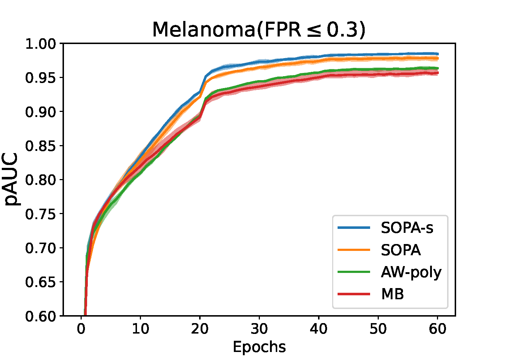
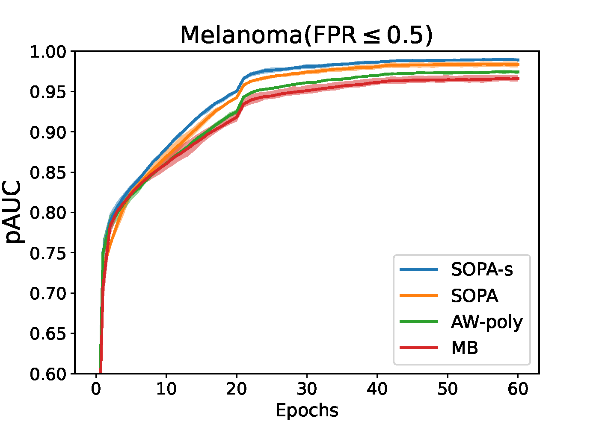
6.4.3.2 Stochastic TPAUC Maximization
As shown in Section 2.3.3, maximization of empirical TPAUC with \(\text{FPR}\leq\beta, \text{TPR}\geq \alpha\) can be formulated as:
\[\begin{align}\label{eqn:etpaucd2} \min_{\mathbf{w}}\frac{1}{k_1}\frac{1}{k_2}\sum_{\mathbf{x}_i\in\mathcal{S}_+^{\uparrow}[1, k_1]}\sum_{\mathbf{x}_j\in\mathcal{S}^\downarrow_-[1, k_2]}\ell(h(\mathbf{w}; \mathbf{x}_j) - h(\mathbf{w}; \mathbf{x}_i)), \end{align}\]
where \(k_1=\lfloor n_+(1-\alpha)\rfloor, k_2 = \lfloor n_-\beta \rfloor\). If we define
\[\begin{align}\label{eqn:refLi2} L_i(\mathbf{w})= \frac{1}{k_2}\sum_{\mathbf{x}_j\in\mathcal{S}^\downarrow_-[1, k_2]}\ell(h(\mathbf{w}; \mathbf{x}_j)-h(\mathbf{w}; \mathbf{x}_i)), \end{align}\]
then, the problem in (\(\ref{eqn:etpaucd2}\)) can be written as:
\[\begin{align}\label{eqn:etpaucd2-top} \min_{\mathbf{w}}\frac{1}{k_1}\sum_{\mathbf{x}_i\in\mathcal{S}^\uparrow_+[1,k_1]}L_i(\mathbf{w}). \end{align}\]
Similar to OPAUC maximization, we will present a direct approach and an indirect approach.
A Direct Approach
Algorithm 31: STACO for solving (\(\ref{eqn:tpauc-final}\)) of direct TPAUC maximization
- Require: learning rate schedules, starting points \(\mathbf w_1\), \(\nu_1=0, \nu'=0\)
- for \(t = 1,\ldots, T\) do
- Draw \(B_1\) positive data \(\mathcal{B}^+_t\subset\mathcal{S}_+\) and \(B_2\) negative data \(\mathcal{B}^-_t\subset\mathcal{S}_-\)
- Compute \(p_{ij} =\mathbb{I}(\ell(h(\mathbf{w}_t, \mathbf{x}_i) - h(\mathbf{w}_t, \mathbf{x}_j)) - \nu_{i,t}> 0)\) for all \(\mathbf{x}_i\in\mathcal{B}^+_t, \mathbf{x}_j\in\mathcal{B}^-_t\)
- for \(i\in \mathcal{B}^+_t\) do
- Update \(y_{i,t+1}\) and \(\nu_{i,t+1}\) by
\[y_{i,t+1}= \left[y_{i,t} - \eta_2\left\{\frac{1}{B_2} \sum_{\mathbf{x}_j\in \mathcal{B}^-_t}(\ell(h(\mathbf{w}_t; \mathbf{x}_j)-h(\mathbf{w}_t; \mathbf{x}_i)) - \nu_{i,t})_+ + \frac{k_2}{n_-}(\nu_{i,t} - \nu'_t)\right\}\right]_{[0,1]}\]
\[\nu_{i,t+1} = \nu_{i,t} - \eta_1 y_{i,t+1}\left( \frac{k_2}{n_-} - \frac{1}{B_2} \sum_{\mathbf{x}_j\in \mathcal{B}^-_t}p_{ij}\right)\]
- end for
- Set \(y_{i,t+1}=y_{i,t}, i\notin\mathcal{B}_t^+\) and \(\nu_{i,t+1}=\nu_{i,t}, i\notin\mathcal{B}_t^+\)
- Update \(\nu'_{t+1}=\nu'_t - \eta_1 \left(\frac{k_1k_2}{n_+n_-} - \frac{k_2}{n_-}\frac{1}{B_1} \sum_{\mathbf{x}_i\in \mathcal{B}^+_t}y_{i,t+1}\right)\)
- Compute a vanilla gradient estimator \(\mathbf{z}_t\) by \[\mathbf{z}_t = \frac{1}{B_1B_2}\sum_{\mathbf{x}_i\in\mathcal{B}^+_t} \sum_{\mathbf{x}_j\in \mathcal{B}_t^-}y_{i,t+1}p_{ij}\nabla_\mathbf{w} \ell(h(\mathbf{w}_t, \mathbf{x}_j) - h(\mathbf{w}_t, \mathbf{x}_i))\]
- Update \(\mathbf{w}_{t+1}\) by SGD, Momentum or AdamW
- end for
The first approach is based on the following reformulation of TPAUC maximization.
Lemma 6.2 (Reformulation of TPAUC maximization.)
When \(\ell(\cdot)\) is non-decreasing, the problem (\(\ref{eqn:etpaucd2}\)) for TPAUC maximization is equivalent to
\[\begin{align}\label{eqn:tpauc-final} \min_{\mathbf{w}, \boldsymbol{\nu}, \nu'} \frac{1}{n_+}\sum_{\mathbf{x}_i\in\mathcal{S}_+}f(g_i(\mathbf{w}, \boldsymbol{\nu}, \nu')) + \frac{k_1k_2}{n_+n_-}\nu', \end{align}\]
where \(\boldsymbol{\nu}=(\nu_1, \ldots, \nu_{n_+})^{\top}\), \(f(\cdot)=[\cdot]_+\) and
\[g_i(\mathbf{w}, \boldsymbol{\nu},\nu') = \frac{1}{n_-} \sum_{\mathbf{x}_j\in \mathcal{S}_-}(\ell(h(\mathbf{w}; \mathbf{x}_j)-h(\mathbf{w}; \mathbf{x}_i)) - \nu_i)_+ + \frac{k_2}{n_-}(\nu_i - \nu').\]
We leave the proof as an exercise for the reader (refer to (Zhu et al., 2022b)).
It is clear that the problem (\(\ref{eqn:tpauc-final}\)) is an instance of FCCO, where the outer function is non-smooth and monotonically non-decreasing. Hence, SONX, SONEX, and ALEXR can be applied. We present an application of ALEXR for solving the above problem in Algorithm 31 (referred to as STACO) based on its min-max reformulation:
\[\begin{align*} \min_{\mathbf{w}, \boldsymbol{\nu}, \nu'} \max_{\mathbf{y}\in [0,1]^{n_+}}\frac{1}{n_+}\sum_{\mathbf{x}_i\in\mathcal{S}_+}y_i\bigg[ \frac{1}{n_-} \sum_{\mathbf{x}_j\in \mathcal{S}_-}(\ell(h(\mathbf{w}; \mathbf{x}_j)-h(\mathbf w; \mathbf{x}_i)) - \nu_i)_+ + \frac{k_2}{n_-}(\nu_i- \nu')\bigg] + \frac{k_1k_2}{n_+n_-}\nu'. \end{align*}\]
An Indirect Approach
Algorithm 32: SOTA-s for solving (\(\ref{eqn:tpauc-tc}\)) of Indirect TPAUC Maximization
- Require: learning rate schedule, \(\gamma_0, \gamma_1\in(0,1)\), \(\tau_1, \tau_2\), starting point \(\mathbf w_1\)
- for \(t = 1,\ldots, T\) do
- Draw \(B_1\) positive data \(\mathcal{B}^+_t\subset\mathcal{S}_+\) and \(B_2\) negative data \(\mathcal{B}^-_t\subset\mathcal{S}_-\)
- for \(i\in \mathcal{B}^+_t\) do
- Update \(u_{i, t} = (1-\gamma_0) u_{i,t-1} + \gamma_0 \frac{1}{B_2}\sum_{\mathbf{x}_j\in \mathcal{B}^-_t}\exp\left( \frac{\ell(h(\mathbf{w}_t; \mathbf{x}_j)-h(\mathbf{w}_t; \mathbf{x}_i))}{\tau_2}\right)\)
- end for
- Set \(u_{i,t} = u_{i,t-1}, i\not\in\mathcal{B}^+_t\)
- Let \(v_{t} = (1-\gamma_1)v_{t-1} + \gamma_1\frac{1}{B_1}\sum_{\mathbf{x}_i\in \mathcal{B}^{+}_t} (u_{i,t})^{\tau_2/\tau_1}\)
- Compute \[p_{ij} =\frac{\exp (\ell(h(\mathbf{w}_t; \mathbf{x}_j) - h(\mathbf{w}_t; \mathbf{x}_i))/\tau_2)(u_{i,t})^{\tau_2/\tau_1 - 1}}{v_{t}}, \forall \mathbf{x}_i\in\mathcal{B}^+_t, \mathbf{x}_j\in\mathcal{B}^-_t\]
- Compute a vanilla gradient estimator \(\mathbf{z}_t\) by \[\mathbf{z}_t=\frac{1}{B_1B_2}\sum_{\mathbf{x}_i\in\mathcal{B}^{+}_t} \sum_{\mathbf{x}_j\in \mathcal{B}^-_t}p_{ij}\nabla \ell(h(\mathbf{w}_t; \mathbf{x}_j) - h(\mathbf{w}_t; \mathbf{x}_i))\]
- Update \(\mathbf{w}_{t+1}\) by Momentum or AdamW
- end for
Following the strategy used in OPAUC maximization, we adopt an indirect approach by replacing top-\(k\) estimators with their KL-regularized DRO counterparts, which yield smooth surrogate objectives.
With a non-decreasing pairwise surrogate loss \(\ell(\cdot)\), \(L_i(\mathbf{w})\) is a non-increasing function of \(h(\mathbf{w}; \mathbf{x}_i)\), the average of \(L_i(\mathbf{w})\) over bottom-\(k_1\) positive examples in (\(\ref{eqn:etpaucd2-top}\)) is equivalent to the average of top-\(k_1\) losses \(L_i(\mathbf{w})\) over all positive data. Hence, we approximate the resulting top-\(k_1\) estimator by a KL-regularized DRO objective:
\[\tau_1\log \left(\frac{1}{n_+}\sum_{\mathbf{x}_i\in\mathcal{S}_+}\exp\left(\frac{L_i(\mathbf{w})}{\tau_1}\right)\right).\]
Then, we substitute \(L_i(\mathbf{w})\) with \(\hat{L}_i(\mathbf{w})\) as defined in (\(\ref{eqn:paucKL}\)), leading to the following smoothed objective:
\[\begin{align*} F(\mathbf{w}) &= \tau_1\log \left(\frac{1}{n_+}\sum_{\mathbf{x}_i\in\mathcal{S}_+}\exp\left(\frac{\hat{L}_i(\mathbf{w})}{\tau_1}\right)\right) \\ &= \tau_1\log \left(\frac{1}{n_+}\sum_{\mathbf{x}_i\in\mathcal{S}_+}\exp\left(\frac{\tau_2\log \left(\frac{1}{n_-}\sum_{\mathbf{x}_j\in\mathcal{S}_-}\exp\left(\frac{\ell(h(\mathbf{w}; \mathbf{x}_j) - h(\mathbf{w}; \mathbf{x}_i))}{\tau_2}\right)\right)}{\tau_1}\right)\right) \\ &= \tau_1\log \left(\frac{1}{n_+}\sum_{\mathbf{x}_i\in\mathcal{S}_+}\left(\frac{1}{n_-}\sum_{\mathbf{x}_j\in\mathcal{S}_-}\exp\left(\frac{\ell(h(\mathbf{w}; \mathbf{x}_j) - h(\mathbf{w}; \mathbf{x}_i))}{\tau_2}\right)\right)^{\frac{\tau_2}{\tau_1}}\right). \end{align*}\]
To minimize this objective, we formulate the problem as a three-level compositional stochastic optimization:
\[\begin{align}\label{eqn:tpauc-tc} \min_{\mathbf{w}} f_1 \left(\frac{1}{n_+}\sum_{\mathbf{x}_i\in\mathcal{S}_+}f_2(g_i(\mathbf{w}))\right), \end{align}\]
where \(f_1(s) = \tau_1\log(s)\), \(f_2(g) = g^{\tau_2/\tau_1}\), and
\[g_i(\mathbf{w}) = \frac{1}{n_-}\sum_{\mathbf{x}_j\in\mathcal{S}_-}\exp\left(\frac{\ell(h(\mathbf{w}; \mathbf{x}_j) - h(\mathbf{w}; \mathbf{x}_i))}{\tau_2}\right).\]
The inner function of \(f_1\) exhibits a finite-sum coupled compositional optimization (FCCO) structure. To accurately estimate \(\nabla f_1(\cdot)\) at the inner function value, we maintain a moving average estimator \(v_t\) to track \(\frac{1}{n_+}\sum_{\mathbf{x}_i\in\mathcal{S}_+}f_2(g_i(\mathbf{w}_t))\).
We present a stochastic optimization algorithm—referred to as SOTA-s—for solving this problem in Algorithm 32. We update \(u_{i,t}\) to track \(g_i(\mathbf{w}_t)\) in Step 5 and maintain \(v_{t}\) to estimate \(\frac{1}{n_+}\sum_{\mathbf{x}_i\in\mathcal{S}_+}f_2(g_i(\mathbf{w}_t))\) in Step 8. The gradient estimator in Step 9 is given by:
\[\nabla f_1(v_{t}) \cdot \frac{1}{|\mathcal{B}_+|}\sum_{\mathbf{x}_i\in\mathcal{B}^+_t}\nabla f_2(u_{i,t}) \cdot \nabla \hat{g}_i(\mathbf{w}_t),\]
where \(\hat{g}_i(\mathbf{w}_t) = \frac{1}{B_2} \sum_{\mathbf{x}_j\sim\mathcal{B}^-_t} \exp\left(\frac{\ell(h(\mathbf{w}_t; \mathbf{x}_j) - h(\mathbf{w}_t; \mathbf{x}_i))}{\tau_2}\right)\).
6.4.4 Stochastic NDCG Maximization
In Section 2.3.4, we have formulated NDCG maximization as the following empirical X-risk minimization problem:
\[\begin{align}\label{eqn:NDCG-loss} \min_{\mathbf{w}} \frac{1}{N} \sum_{q=1}^N \frac{1}{Z_q} \sum_{\mathbf{x}_{q,i} \in \mathcal{S}^+_q} \frac{1-2^{y_{q,i}}}{\log_2(N_qg(\mathbf{w}; \mathbf{x}_{q,i}, \mathcal{S}_q) + 1)}, \end{align}\]
where \(N_qg(\mathbf{w}; \mathbf{x}, \mathcal{S}_q)=\sum_{\mathbf{x}'\in\mathcal{S}_q}\ell(s(\mathbf{w}; \mathbf{x}', q) - s(\mathbf{w}; \mathbf{x}, q))\) is a surrogate of the rank function \(r(\mathbf{w};\mathbf{x}, S_q)=\sum_{\mathbf{x}'\in\mathcal{S}_q}\mathbb{I}(s(\mathbf{w}; \mathbf{x}', q) - s(\mathbf{w}; \mathbf{x}, q) \geq 0)\), and \(s(\mathbf{w}; \mathbf{x}, q)\) denotes the predicted relevance score for item \(\mathbf{x}\) with respect to query \(q\), parameterized by \(\mathbf{w} \in \mathbb{R}^d\) (e.g., a deep neural network).
As a result, NDCG maximization can be rewritten as an instance of FCCO:
\[\begin{align}\label{eqn:NDCG-fcco} \min_{\mathbf{w} \in \mathbb{R}^d} \frac{1}{|\mathcal{S}|} \sum_{(q, \mathbf{x}_{q,i}) \in \mathcal{S}} f_{q,i}(g(\mathbf{w}; \mathbf{x}_{q,i}, \mathcal{S}_q)), \end{align}\]
where \(\mathcal{S} = \{(q, \mathbf{x}_{q,i}) \mid q \in \mathcal{Q}, \mathbf{x}_{q,i} \in \mathcal{S}^+_q\}\) represents the collection of all relevant query-item (Q-I) pairs, and
\[f_{q,i}(g) = \frac{1}{Z_q}\frac{1-2^{y_{q,i}}}{\log_2(N_qg + 1)}.\]
We apply the SOX method to this problem as shown in Algorithm 33, which we call SONG.
Algorithm 33: SONG
- Require learning rate schedule, \(\gamma\in(0,1)\), starting point \(\mathbf w_1\)
- for \(t=1,...T\) do
- Draw some relevant Q-I pairs \(\mathcal{B}_t=\{(q, \mathbf{x}_{q,i})\}\subset\mathcal{S}\)
- For each sampled \(q\) draw a batch of items \(\mathcal{B}^t_q\subset\mathcal{S}_q\)
- for each sampled Q-I pair \((q,\mathbf{x}_{q,i})\in \mathcal{B}_t\) do
- Compute \(u_{q, i, t}=(1-\gamma)u_{q, i, t-1}+\gamma\frac{1}{|\mathcal{B}^t_q|}\sum_{\mathbf{x}'\in\mathcal{B}^t_q}\ell(s(\mathbf{w}_t; \mathbf{x}', q) - s(\mathbf{w}_t; \mathbf{x}_{q,i}, q))\)
- Compute \[p_{q, i} = \nabla f_{q,i}(u_{q,i,t}) = \frac{(2^{y_{q,i}} - 1) N_q}{Z_q (N_q u_{q,i,t} + 1) \log_2^2(N_q u_{q, i, t} + 1) \ln(2)}\]
- end for
- Compute a vanilla gradient estimator \(\mathbf{z}_t\) by \[\mathbf{z}_t = \frac{1}{|\mathcal{B}_t|}\sum_{(q,\mathbf{x}_{q,i})\in\mathcal{B}_t}p_{q, i} \frac{1}{|\mathcal{B}^t_q|}\sum_{\mathbf{x}'\in\mathcal{B}^t_q}\ell(s(\mathbf{w}; \mathbf{x}', q) - s(\mathbf{w}; \mathbf{x}_{q,i}, q))\]
- Update \(\mathbf{w}_{t+1}\) by Momentum and AdamW optimizer
- end for
Top-\(K\) NDCG Maximization
In practice, top-\(K\) NDCG is the preferred metric for information retrieval and recommender systems, as users primarily focus on the highest-ranked items. It is defined as:
\[\frac{1}{N} \sum_{q=1}^N \frac{1}{Z_q^{(K)}} \sum_{\mathbf{x}_{q,i} \in \mathcal{S}^+_q} \mathbb{I}(\mathbf{x}_{q,i} \in \mathcal{S}_q^{(K)}) \cdot \frac{2^{y_{q,i}} - 1}{\log_2(r(\mathbf{w}; \mathbf{x}_{q,i}, \mathcal{S}_q) + 1)},\]
where \(\mathcal{S}_q^{(K)}\) is the set of top-\(K\) items based on predicted scores, and \(Z_q^{(K)}\) is the ideal DCG in the top-\(K\) positions.
Optimizing top-\(K\) NDCG introduces an added complexity: selecting the top-\(K\) items is non-differentiable. Unlike pAUC, where a top-\(K\) estimator exists, the surrogate function
\[f_{q,i}(g(\mathbf{w}; \mathbf{x}_{q,i}, \mathcal{S}_q))=\frac{1-2^{y_{q,i}}}{Z_q^{(k)}\log_2(N_q g(\mathbf{w}; \mathbf{x}_{q,i}, \mathcal{S}_q) + 1)}\]
is not generally monotonic in the score \(s(\mathbf{w}; \mathbf{x}_{q,i}, q)\) unless all \(y_{q,i}\) values are identical. We consider two approaches to handle this problem.
Approach 1: Surrogate for Top-\(K\) Inclusion
We use the identity \(\mathbb{I}(\mathbf{x}_{q,i} \in \mathcal{S}_q^{(K)}) = \mathbb{I}(K - r(\mathbf{w}; \mathbf{x}_{q,i}, \mathcal{S}_q) \geq 0)\) and approximate it by a non-decreasing surrogate \(\psi(K - N_q g(\mathbf{w}; \mathbf{x}_{q,i}, \mathcal{S}_q))\), e.g., the sigmoid function. The resulting objective becomes:
\[\begin{align}\label{eqn:topKNDCG} \min_{\mathbf{w} \in \mathbb{R}^d} \frac{1}{|\mathcal{S}|} \sum_{q=1}^N \sum_{\mathbf{x}_{q,i} \in \mathcal{S}^+_q} \psi(K - N_q g(\mathbf{w}; \mathbf{x}_{q,i}, \mathcal{S}_q))f(g(\mathbf{w}; \mathbf{x}_{q,i}, \mathcal{S}_q)). \end{align}\]
This can be optimized using FCCO techniques.
Approach 2: Threshold Estimation via Bilevel Optimization
Denote by \(\lambda_q(\mathbf{w})\) the \((K+1)\)-th largest score among all \(\mathbf{x}' \in \mathcal{S}_q\). We use the identity \(\mathbb{I}(\mathbf{x}_{q,i} \in \mathcal{S}_q^{(K)}) = \mathbb{I}(s(\mathbf{w}; \mathbf{x}_{q, i}, q)> \lambda_q(\mathbf{w}))\) and approximate it by \(\psi(s(\mathbf{w}; \mathbf{x}_{q,i}, q) - \lambda_q(\mathbf{w}))\). The threshold \(\lambda_q(\mathbf{w})\) can be computed by solving a convex optimization problem as shown in the lemma below (cf. Qiu et al. (2022)).
Lemma 6.3
Let \(\lambda_q(\mathbf{w}) = \arg\min_{\lambda} (K + \varepsilon) \lambda + \sum_{\mathbf{x}' \in \mathcal{S}_q} (s(\mathbf{w}; \mathbf{x}', q) - \lambda)_+\) for any \(\varepsilon \in (0,1)\), then \(\lambda_q(\mathbf{w})\) is the \((K+1)\)-th largest value among \(\{s(\mathbf{w}; \mathbf{x}', q)|\mathbf{x}'\in\mathcal{S}_q\}\).
As a result, we formulate the following bilevel optimization problem for top-\(K\) NDCG maximization:
\[\begin{equation*} \begin{aligned} \min_{\mathbf{w}} \quad & \frac{1}{|\mathcal{S}|} \sum_{q=1}^N \sum_{\mathbf{x}_{q,i} \in \mathcal{S}^+_q}\psi(s(\mathbf{w}; \mathbf{x}_{q,i}, q) - \lambda_q(\mathbf{w}))f_{q,i}(g(\mathbf{w}; \mathbf{x}_{q,i}, \mathcal{S}_q)) \\ \text{s.t.} \quad & \lambda_q(\mathbf{w}) = \arg\min_{\lambda} \frac{K + \varepsilon}{N_q} \lambda + \frac{1}{N_q} \sum_{\mathbf{x}' \in \mathcal{S}_q} (s(\mathbf{w}; \mathbf{x}', q) - \lambda)_+, \quad \forall q. \end{aligned} \end{equation*}\]
This bilevel formulation is challenging due to the non-smooth and non-strongly-convex lower-level problem. One remedy is to apply Nesterov smoothing to the hinge loss (see Example 5.1) and add a small quadratic regularization term of \(\lambda\) to the lower level objective. This allows employing the Approach 1 of using moving-average estimators from Section 4.5.3.
In practice, we can ignore the gradient of \(\psi\) and adapt the SONG algorithm by updating \(\lambda_q\) iteratively and modifying \(p_{q,i}\) as:
\[\begin{align*} \lambda_{q,t+1} &= \lambda_{q,t} - \eta' \left( \frac{K + \varepsilon}{N_q} + \frac{1}{|\mathcal{B}_q|} \sum_{\mathbf{x}' \in \mathcal{B}^t_q} \mathbb{I}(s(\mathbf{w}_t; \mathbf{x}', q) > \lambda_{q,t}) \right), \quad \forall q \in \mathcal{B}_t, \\ p_{q,i} &= \psi(s(\mathbf{w}_t; \mathbf{x}_{q,i}, q) - \lambda_{q,t+1}) \cdot \nabla f_{q,i}(u_{q,i,t}). \end{align*}\]
As with other non-decomposable metrics, it is beneficial to first pretrain the model by optimizing the listwise cross-entropy loss, which itself is an FCCO problem, as defined in ListNet.
6.4.5 The LibAUC Library
The algorithms presented in previous subsections for various X-risk
minimization tasks share several common features: (1) they all require
sampling both positive and negative examples; (2) their vanilla gradient
updates involve a weighted sum of gradients from pairwise losses
computed on the sampled data; and (3) they utilize moving-average
estimators to track inner function values. These shared characteristics
motivate the design of a unified implementation pipeline. To this end,
the LibAUC library was developed to encapsulate these
principles within a modular and extensible framework, built on top of
the PyTorch ecosystem. Below, we highlight several key components of
LibAUC. For tutorials and source code, we refer interested
readers to the GitHub repository:
Pipeline
The training pipeline of a deep neural network in the
LibAUC library is illustrated in Figure 6.13. It consists of five core
modules: Dataset, Controlled Data Sampler,
Model, Dynamic Mini-batch Loss, and
Optimizer. While the Dataset,
Model, and Optimizer modules align closely
with those in standard training frameworks, the key innovations lie in
the Dynamic Mini-batch Loss and
Controlled Data Sampler modules.
The Dynamic Mini-batch Loss module defines the loss
using dynamically updated variables, which are computed and refined with
forward propagation results. This design ensures that compositional
gradients can be correctly estimated from mini-batch samples using
backpropagation. The Controlled Data Sampler module, in
contrast to standard random sampling strategies, allows fine-grained
control over the ratio of positive to negative samples. This control can
be tuned to improve learning effectiveness and overall performance.
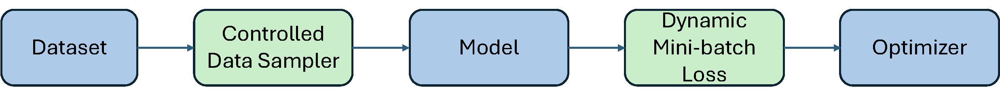
Controlled Data Sampler
Unlike traditional ERM, EXM requires sampling to estimate the outer
average and the inner average. In algorithms for AUC, AP, OPAUC and
TPAUC optimization, we need to sample two mini-batches \(\mathcal{B}^t_+\subset\mathcal{S}_+\) and
\(\mathcal{B}_-^t\subset\mathcal{S}_-\)
at each iteration \(t\). When the total
batch size is fixed, balancing the mini-batch size for outer average and
that for the inner average could be beneficial for accelerating
convergence according to our theoretical analysis in Chapter 5. Hence, the
Controlled Data Sampler module can help ensure that both
positive and negative samples will be sampled and the proportion of
positive samples in the mini-batch can be controlled by a
hyper-parameter.
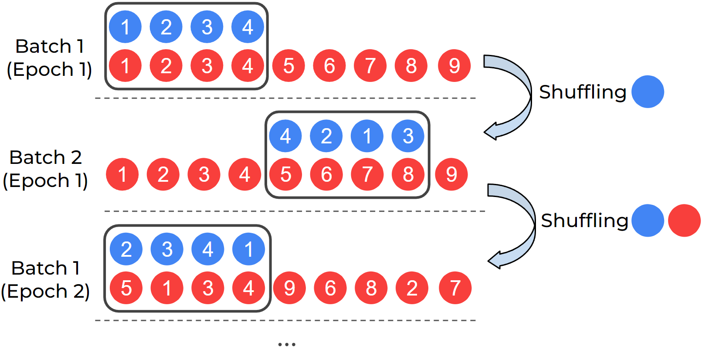
DualSampler for an imbalanced
dataset with 4 positives and 9 negatives.
DualSampler. For binary classification problems,
DualSampler takes as input hyper-parameters such as
batch_size and sampling_rate, and generates
the customized mini-batch samples, where sampling_rate
controls the number of positive samples in the mini-batch according to
the formula:
\[\texttt{\#positives} = \texttt{batch\_size} * \texttt{sampling\_rate}.\]
Figure 6.14 shows an example of
DualSampler for constructing mini-batch data with even
positive and negative samples on an imbalanced dataset with 4 positives
and 9 negatives. To improve the sampling speed, two lists of indices are
maintained for the positive data and negative data, respectively. At the
beginning, we shuffle the two lists and then take the first 4 positives
and 4 negatives to form a mini-batch. Once the positive list is used up,
we only reshuffle the positive list and take 4 shuffled positives to
pair with next 4 negatives in the negative list as a mini-batch. Once
the negative list is used up, we re-shuffle both lists and repeat the
same process as above. An illustration of the impact of the DualSampler
on the convergence is shown in Figure
6.15.
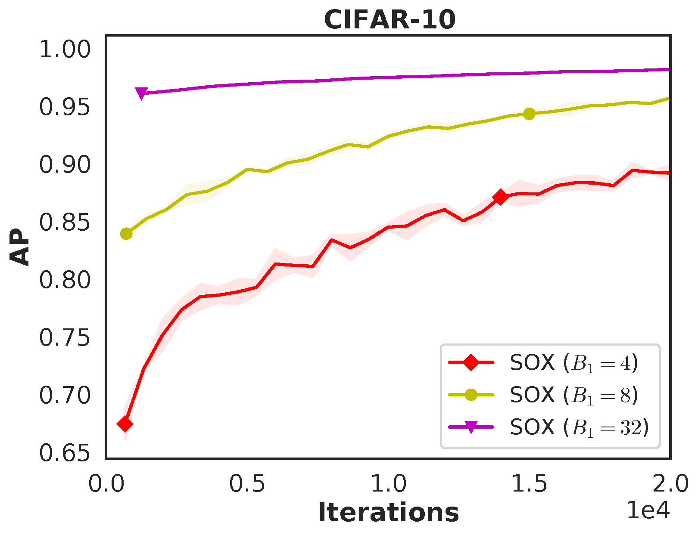
TriSampler. For multi-label classification problems
with many labels and ranking problems, TriSampler first
samples a set of tasks controlled by a hyperparameter
sampled_tasks, and then samples positive and negative data
for each task.
The following code snippet shows how to define
DualSampler and TriSampler.
from libauc.sampler import DualSampler, TriSampler
dualsampler = DualSampler(trainSet,
batch_size=32,
sampling_rate=0.1)
trisampler = TriSampler(trainSet,
batch_size_per_task=32,
sampled_tasks=5,
sampling_rate_per_task=0.1)Dynamic Mini-batch Loss
To compute the vanilla gradient estimator, we invoke backpropagation
using the PyTorch function loss.backward() on a defined
loss. The vanilla gradient estimators for pAUC, AP, and NDCG
maximization share a common structure of the form
\[\frac{1}{|\mathcal{B}_1|}\sum_{\mathbf{x}_i\in\mathcal{B}_1}\frac{1}{|\mathcal{B}_2|}\sum_{\mathbf{x}_j\in\mathcal{B}_2}p_{ij}\nabla\ell(h(\mathbf{w}; \mathbf{x}_j) - h(\mathbf{w}; \mathbf{x}_i)),\]
where the weights \(p_{ij}\) are
computed from dynamic variables within the algorithm. To enable the use
of loss.backward(), it suffices to define a mini-batch loss
as \(\frac{1}{|\mathcal{B}_1|}\sum_{\mathbf{x}_i\in\mathcal{B}_1}\frac{1}{|\mathcal{B}_2|}\sum_{\mathbf{x}_j\in\mathcal{B}_2}p_{ij}\ell(h(\mathbf{w};
\mathbf{x}_j) - h(\mathbf{w}; \mathbf{x}_i))\), where \(p_{ij}\) is detached from the computation
graph to avoid unnecessary backpropagation through these variables.
Since \(p_{ij}\) is evolving across
iterations, the mini-batch loss is called dynamic mini-batch loss. A
high-level pseudocode example for SOPAs is provided below.
# define dynamic mini-batch loss
def pAUCLoss(**kwargs): # dynamic mini-batch loss
sur_loss = surrogate_loss(neg_logits - pos_logits)
exp_loss = torch.exp(sur_loss / Lambda)
u[index] = (1 - gamma) * u[index] + gamma * (exp_loss.mean(1))
p = (exp_loss / u[index]).detach()
loss = torch.mean(p * sur_loss)
return loss
# optimization
for data, targets, index in dataloader:
logits = model(data)
loss = pAUCLoss(logits, targets, index)
optimizer.zero_grad()
loss.backward()
optimizer.step()Comparison with Existing Libraries
We present some benchmark results of LibAUC in comparison with other state-of-the-art training libraries.
Comparison with the TFCO Library. We compare LibAUC
(SOAP) with Google’s TensorFlow Constrained Optimization (TFCO) library
for optimizing average precision (AP). Both methods are trained for 100
epochs using a batch size of 128, the Adam optimizer with a learning
rate of \(1\text{e-}3\), and a weight
decay of \(1\text{e-}4\) on a binary
classification task derived from CIFAR-10 with imratio
\(\in \{1\%, 2\%\}\). The training and
testing learning curves, shown in Figure 6.11,
demonstrate that LibAUC consistently outperforms TFCO.
Comparison with the TF-Ranking Library. We evaluate
LibAUC, using SONG for NDCG maximization, against Google’s TF-Ranking
library, which implements ApproxNDCG and
GumbelNDCG. Experiments are conducted on two large-scale
datasets—MovieLens20M and MovieLens25M—from the MovieLens platform. As
shown in Figure 6.16, LibAUC achieves
superior performance on both datasets. Furthermore, the runtime
comparison shows that LibAUC’s NDCG maximization algorithm is more
efficient than the corresponding implementations in TF-Ranking.
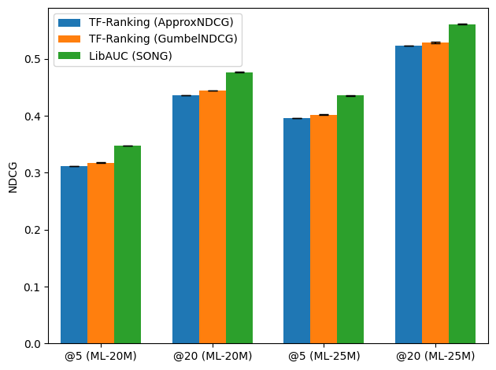
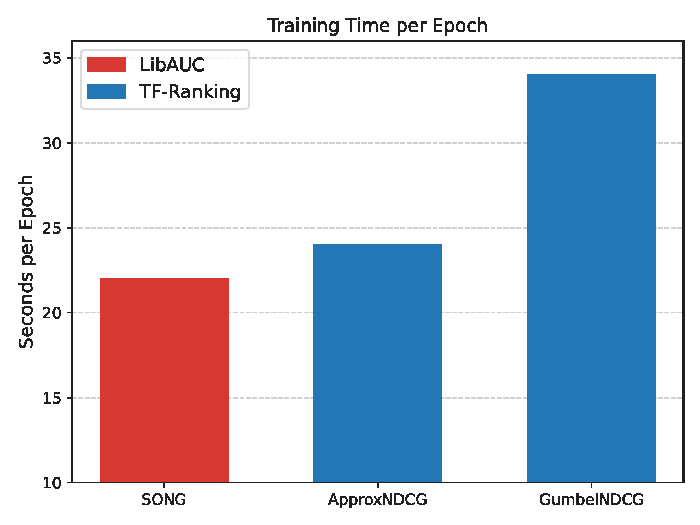